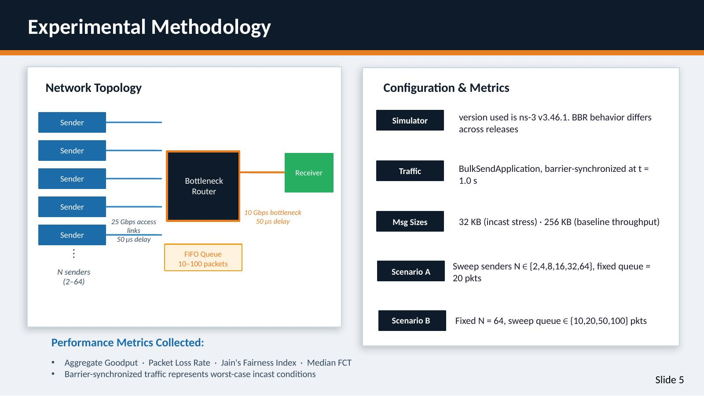
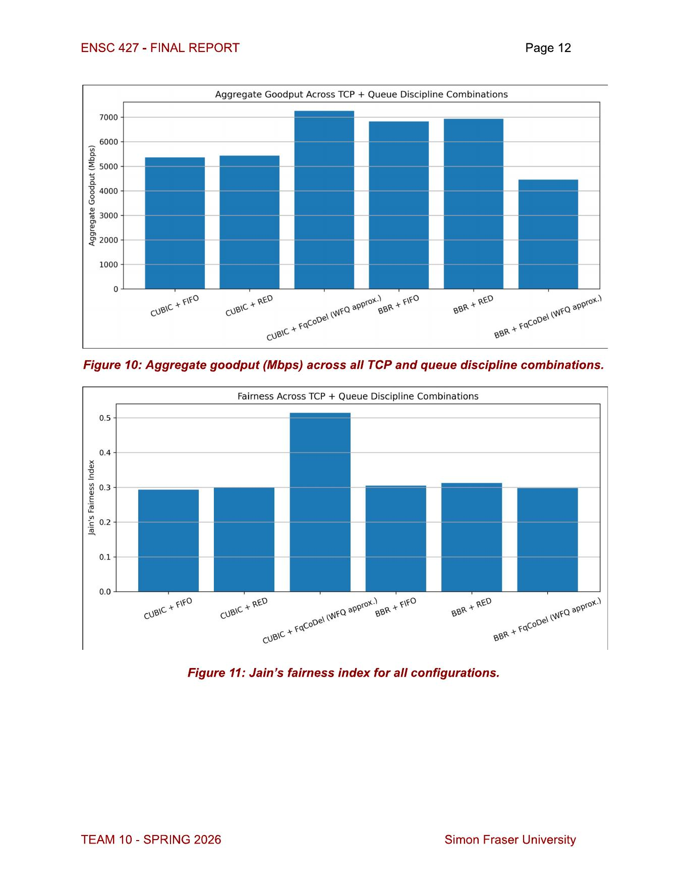
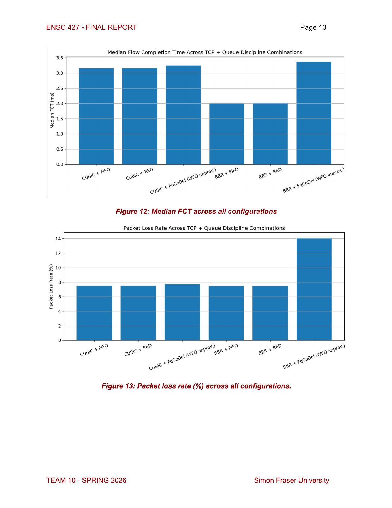

Create synchronized traffic
Used synchronized BulkSend applications in ns-3 to generate a many-to-one burst through the bottleneck.
A team study comparing TCP CUBIC and TCP BBR when many senders transmit to one receiver at the same time. We examined how FIFO, RED and FqCoDel affected goodput, flow-completion time, packet loss and fairness.

Incast occurs when many senders transmit to one receiver at nearly the same time. The burst can overwhelm a bottleneck queue, causing packet loss, retransmissions and longer transfer times.
We first varied sender count and queue depth under FIFO. We then used a fixed stress case with 64 senders and a configured queue depth of 50 packets to compare two TCP variants, each paired with three queue disciplines.
We examined aggregate performance and per-flow behaviour to understand the trade-offs between transfer rate, completion time, loss and fairness.
Used synchronized BulkSend applications in ns-3 to generate a many-to-one burst through the bottleneck.
Tested sender counts from 2 to 64 and queue depths from 10 to 100 packets to examine when performance deteriorated.
Paired CUBIC and BBR with FIFO, RED and FqCoDel under the same 64-sender stress condition.
Compared aggregate goodput, median flow-completion time, packet loss and Jain’s fairness index.
In the tested workload, CUBIC with FqCoDel had the highest goodput and fairness index. BBR with FIFO or RED had the lowest median flow-completion time.
| Configuration | Goodput | Median FCT | Packet loss | Fairness index | Observation |
|---|---|---|---|---|---|
| CUBIC + FIFO | 5,358.7 Mbps | 3.16 ms | 7.52% | 0.29 | CUBIC baseline |
| CUBIC + RED | 5,431.4 Mbps | 3.16 ms | 7.51% | 0.30 | Similar results to CUBIC + FIFO |
| CUBIC + FqCoDel | 7,258.7 Mbps | 3.25 ms | 7.74% | 0.51 | Highest goodput and fairness index |
| BBR + FIFO | 6,826.5 Mbps | 2.01 ms | 7.49% | 0.31 | Tied for lowest median FCT |
| BBR + RED | 6,933.5 Mbps | 2.01 ms | 7.48% | 0.31 | Tied for lowest median FCT |
| BBR + FqCoDel | 4,455.4 Mbps | 3.37 ms | 14.13% | 0.30 | Lowest goodput and highest packet loss |


The results showed why congestion control and queue management need to be considered together. In this experiment, the configuration with the highest goodput did not have the shortest median completion time.
These findings describe the simulated topology, traffic pattern and settings used in the study. Other workloads or network configurations would need separate testing.
FqCoDel increased goodput and fairness for CUBIC, while the BBR pairing produced lower goodput and higher loss under the tested conditions.
Goodput alone did not describe the full result. Completion time, loss and fairness revealed additional trade-offs. The highest fairness index was 0.51, still below the ideal value of 1.
Perfectly synchronized senders created a deliberately demanding test case. The study used FqCoDel as its fair-queueing approach; it was not an exact implementation of weighted fair queueing.
This was a two-person project. My teammate and I contributed equally to experiment design, simulation, C++ implementation, data analysis and report writing.